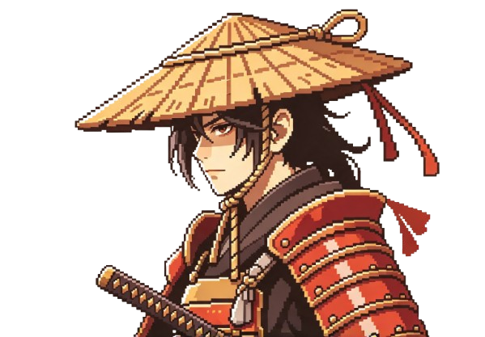

Hiroshi, o Último Samurai
Nome verdadeiro: Hiroshi Takamura
Apelido: O Último Samurai
Título: Defensor do Povo Perdido
Segundo título: O Herdeiro da Lâmina Quebrada
Desde a infância, Hiroshi Takamura foi treinado por seu pai nas
antigas artes dos samurais. Aprendeu a manejar a espada, a
honrar seus antepassados e a proteger aqueles que não podiam
lutar por si mesmos.
Sua vida mudou quando o reino onde vivia foi destruído pelas
forças do General Kurokage. Durante o ataque, seu pai
desapareceu misteriosamente, deixando para trás apenas uma
lâmina quebrada e muitas perguntas sem resposta.
Determinado a descobrir o destino de seu pai e recuperar sua
terra natal, Hiroshi iniciou uma jornada repleta de perigos.
Enfrentou monstros, guerreiros corrompidos e poderes sombrios
que ameaçavam consumir tudo ao seu redor.
Mesmo diante de perdas e adversidades, nunca abandonou seu
código de honra. Sua coragem e determinação fizeram dele uma
lenda entre os sobreviventes, um símbolo de esperança para
aqueles que perderam tudo.
Agora, conhecido como o Último Samurai, Hiroshi carrega a
responsabilidade de defender seu povo e restaurar a honra de seu
reino. Sua jornada ainda não terminou, e sua lâmina, mesmo
marcada pelo passado, continua pronta para lutar.